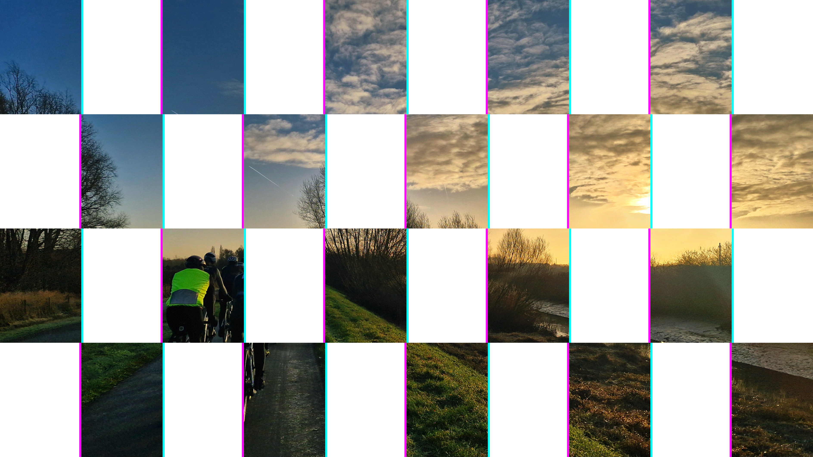
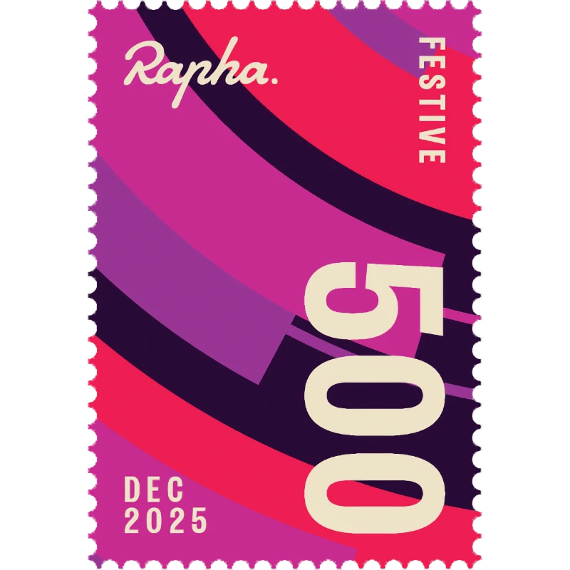
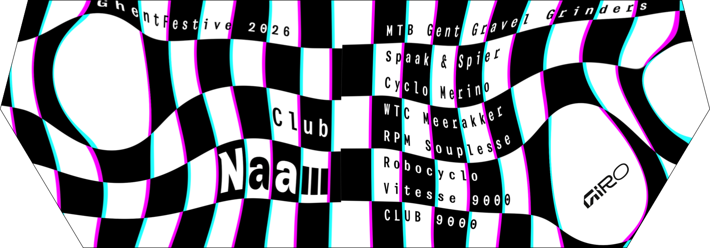

Ghent Festive 500
8 dagen • 8 Gentse fietsclubs • 8 social rides van 75 of 100 km
Samen fietsen voor het goede doel door aankoop van kaderplaatjes.
8 dagen
De Rapha Festive 500 is de eindejaarsfietsuitdaging tussen kerstavond en oudejaarsavond: minimaal 500 km fietsen in 8 dagen tijd.
8 Gentse fietsclubs helpen je voor de vijfde keer met deze uitdaging. Van 24 tot en met 31 december organiseert elke club twee social rides van 75 km en 100 km, beide begeleid door wegkapiteins.

8 Gentse fietsclubs
Kaderplaatje
Ook dit jaar: het funky kaderplaatje. Toon op je fiets hoeveel ritten je hebt gereden tijdens de Ghent Festive 500.

Bestel vooraf je gepersonaliseerd plaatje via een vrije bijdrage. Alle opbrengsten gaat naar Sportaround.
Jouw kaderplaatje helpt je om:
- een goed doel te steunen
- je ritten bij te houden
- andere deelnemers te leren kennen
- een aandenken te hebben
Sportaround
Alle opbrengsten van de kaderplaatjes gaan naar Sportaround, een Gentse VZW die werk maakt van sportmogelijkheden voor iedereen. Meer dan 55 actieve vrijwilligers helpen wekelijks om meer kinderen sportieve kansen aan te bieden. Door een kaderplaatje aan te kopen, steun je deze organisatie en help je meer mensen aan het sporten.
8 social rides
Wil je meefietsen? Zorg dat je fiets in goede staat is en meld je aan voor het betreffende Strava evenement.
We verzamelen elke dag vanaf 9h00 bij Kaffee Allez (Groenstraat 1, Oostakker) en vertrekken om 9h30. De finishlocatie hangt af van de organiserende club van die dag en vind je terug in de kalender, net zoals de routes die je kunt downloaden.
Kom je met de auto? Er zijn parkeermogelijkheden rond de site in Oostakker.
No drop policy
Alle ritten zijn social rides met een no drop policy: er wordt comfortabel samen gereden en er is geen competitie. We willen mensen motiveren om te sporten in een periode waarin dit vaak moeilijk is door het winterweer en gebrek aan motivatie om alleen te fietsen.
Bij kleine materiaalpech wachten we tot de pech verholpen is. In geval van onvoorziene omstandigheden kan de groep in overleg worden opgesplitst om ieders veiligheid en comfort te garanderen.
Pelotons en richtsnelheden
Elke afstand, 75 km en 100 km, wordt aangeboden in een sneller en een trager peloton. De richtsnelheden zijn 30 km/h en 27 km/h gemiddeld respectievelijk, maar de werkelijke snelheid hangt af van het parcours, de weersomstandigheden en de groep. Onze wegkapiteins zorgen ervoor dat de rit aan een tempo wordt gefietst dat comfortabel is voor iedereen.
Als de pelotons te groot worden, splitsen we ze verder op in kleinere groepen voor ieders comfort en veiligheid. Weinig ervaring met in peloton rijden? Bekijk de tips om veilig in peloton te fietsen.
Veiligheid: thema 2026
Deze editie zetten we extra in op veiligheid en hoffelijkheid in het verkeer. In juni 2027 treedt een nieuwe wegcode in werking waarbij pelotons vanaf 10 fietsers niet langer verplicht zijn het fietspad te gebruiken. De Ghent Festive 500 wil hier vooruitlopend op inzetten door een positief voorbeeld te geven.
Elk peloton wordt begeleid door wegkapiteins die instaan voor het vlot en veilig verloop van de rit. Zij geven de nodige seinen en bewaken de veiligheid van de groep in het verkeer. Voor de start van de Festive organiseren we een wegkapiteinbriefing om alle wegkapiteins optimaal voor te bereiden op het veilig en hoffelijk begeleiden van de groepen.